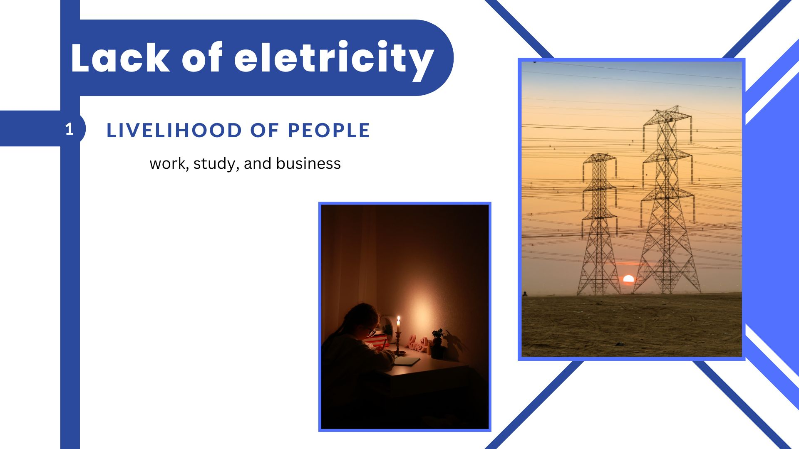

Pakistan Energy Crisis
Pakistan is facing an energy crisis. There are two reasons that cause Pakistan to have these problems such as the delay of citizens in paying the electricity bill and lack of electricity sources. For this reason, companies were not able to supply enough electricity to their business and people were not able to use enough electricity for their daily life. The government is trying to solve this problem namely planning for renewable energy, increasing the capacity of nuclear and installing a new nuclear reactor, installing small turbines, and using coal gas. The best solution for the government is to invest in a small turbine and install renewable energy.
The people in Pakistan delayed paying their electricity bill payments so the government delayed the compensation of the electricity bill to the companies on time which caused the people in Pakistan to lack of energy (The Real News Network, 2023). As a result, the companies did not supply enough fuel and charge to power plants to get full capacity. On the other hand, Pakistan desires to cut off energy to save money because of the high demand using electricity and there is a shortage of resources to keep the oil and gas-fired power plants (Usman, 2023). Pakistan lacks power sources and more than 2.3 million people do not get enough water to drink because the pumps are powered by electricity. Insufficient power to employ fans or air conditioners” (Usman, 2023). It was difficult to work and study. The rural areas are the worst where the power is off for up to 20 hours, and the government has to require all markets and restaurants to be stop operating by 8:30 pm and 10:00pm respectively (Sarfi and Madhok, 2023). People in Pakistan lack electricity because of the high consumption of electricity, and people do not pay the bill one time which causes the government to delay the bill. So, the companies did not supply enough fuel and charge to power plants to get full capacity.
Solution
The government of Pakistan has three solutions to help people in the country to have enough power sources to use for the entire country. First, the government is considering building renewable energy and increasing the capacity of nuclear power by installing a new nuclear reactor, and setting up small turbines including using coal gas. By 2023, the government hopes to reach the goal of getting at least 60% of Pakistan’s energy using other sources and sustainable power namely, solar energy, hydropower and wind (CNBC, 2023). The significance of having hydropower, wind, and solar energy can help domestic people to have enough energy to employ. Moreover, Pakistan should invest in enhancing its own nuclear energy generation capabilities domestically increasing the current reactor’s capacity (Cohen, 2023) because of insufficient power to operate electricity. The government of Pakistan should install a new nuclear reactor because Pakistan has an excessive rainfall and energy disaster so the consumption of electricity power is very high so establishing nuclear power is needed. Dr. Samar Munbarakmand, a nuclear scientist and energy development expert has an idea to utilize the water located at the Swat Area because it has a small stream (The Real News Network as cited by Mubarakmand, 2013). His solution is to set up small turbines and a generator located in the Swat Area. For instance, the gasification of coal into gas and the coal gas employed for power generation, diesel fuel production, methanol production, fertilizer production, plastic production, pharmaceuticals, and 20 other elements. Coal gas can be employed for burning in the household. The goal of the government of Pakistan is for the people to have enough electricity to use. The government has a plan to build renewable energy derived from hydropower, wind, and solar energy. Moreover, increasing the capacity of nuclear power by installing a new nuclear reactor and setting up small turbines will contribute to the increased capacity of energy. Using coal gas can be used for power generation in the household.
It is important to evaluate these solutions in order to recommend the most favorable solution. The first solution is an amazing idea that the government of Pakistan came up with to help their country because it will be possible to obtain at least 60% of Pakistan’s energy using renewable energy. It is a good project and I support the government to set up hydropower, wind, and solar energy. It is an effective solution because the Pakistani government does not need to purchase oil or gas from other countries. In addition, setting up hydropower, wind, and solar energy has many benefits because they produce energy for the entire country. I support the government to establish them because renewable energy reduces high debt. The second solution has many benefits. It increases the capacity of nuclear power and establishes new nuclear reactors. I support their idea. The government of Pakistan supplies the country with abundant electricity to help their people. Installing a new nuclear reactor is a requirement because Pakistan has suffered rainfall and energy disasters. The third solution is to set up a small turbine and to employ coal gas. It is a good idea because it can produce energy capacity for domestic people, but using coal gas causes many problems in the climate. Pakistan has a Swat Area where we can build a small turbine, and it does not cost much money to establish a turbine. Coal gasification has many potential benefits because we can use coal gas for power generation, but it causes environmental pollution because coal gas produces carbon dioxide, nitrogen oxide, and sulfur dioxide which cause air pollution and climate change. setting up renewable sources and a small turbine is the best idea because it does not require much money to build it and it can be used in the long run. Using coal gas, increasing the capacity of nuclear, and establishing new nuclear reactors cost too much money and increase the air pollution in Pakistan.
Results
Conclusion
Pakistan is facing an energy crisis including delayed electricity bill payments because of this problem, it affects daily life, education, work, and water supply. In order to help these challenges, the government came up with three solutions. First, the government is planning to invest in renewable energy sources namely hydropower, wind, and solar energy. Second, Pakistan should build a small turbine at the Swat Area. It would help Pakistan to avoid using foreign oil and gas that cause high debt. Third, increasing the capacity of nuclear power by installing a new nuclear reactor and using coal but it will cause air pollution in Pakistan. The best solution for the government is to invest in a small turbine and install renewable energy.